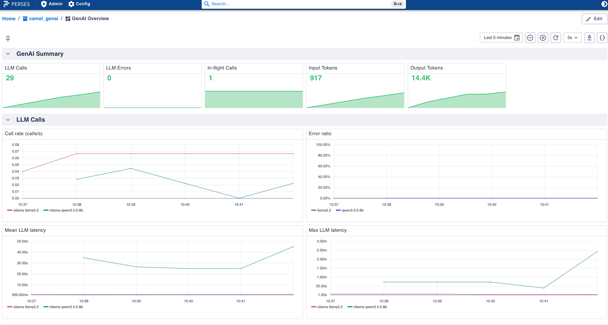
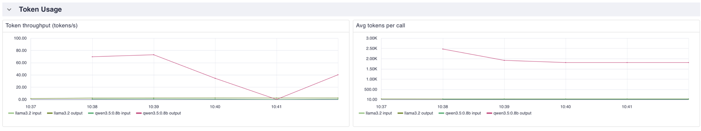

In Part 1 we prototyped GenAI observability with the Camel CLI and TUI. This follow-up — Phase 3 (Operate) — shows the same gen_ai.* telemetry in a Spring Boot application wired to the observability stack Camel ships for local development: Prometheus, VictoriaTraces, and Perses.
The runnable sample lives in the camel-spring-boot-examples repository at genai-observability (reworked in PR #192).
Architecture
Terminal 1: ollama serve
Terminal 2: camel infra run observability
Terminal 3: mvn spring-boot:run
┌─────────────────┐ scrape :9876/observe/metrics ┌──────────────┐
│ Spring Boot │ ───────────────────────────────► │ Prometheus │
│ Camel + 2 LLMs │ │ :9090 │
│ app :8080 │ └──────┬───────┘
│ mgmt :9876 │ │
└────────┬────────┘ ▼
│ OTLP (Micrometer Tracing) ┌──────────────┐
▼ │ Perses │
┌─────────────────┐ dashboards │ :3000 │
│ VictoriaTraces │ ◄────────────────────────────────└──────────────┘
│ :10428 │
└─────────────────┘
Two timer routes call two small Ollama models (llama3.2:1b and qwen3:0.6b), so every GenAI metric and span carries a distinct gen_ai.request.model tag — ideal for Perses dashboards that compare latency and token cost per model.
The camel-observability-services-starter moves Actuator endpoints to management port 9876 under /observe, with Prometheus at /observe/metrics. Both standard Camel metrics and gen_ai.* metrics share the same Micrometer registry.
Traces use the Spring Boot idiomatic setup: Micrometer Tracing with the OpenTelemetry bridge (spring-boot-micrometer-tracing-opentelemetry, micrometer-tracing-bridge-otel, opentelemetry-exporter-otlp). Spring Boot auto-configures the OTLP exporter and a tracing handler on the ObservationRegistry. Camel route spans (via camel-opentelemetry2) and gen_ai.* client spans land in the same VictoriaTraces trace.
Quick start
Prerequisites
java -version # 17+
mvn -version # 3.9+
camel version # Camel CLI 4.22+
docker --version # used by camel infra run observability
ollama pull llama3.2:1b
ollama pull qwen3:0.6b
Terminal 1 — Ollama
ollama serve
Terminal 2 — Observability stack
camel infra run observability
This bundles Prometheus, VictoriaTraces, VictoriaLogs, and Perses — the same stack described in the Camel 4.22 what’s new post. You can also start it from the Camel TUI infrastructure panel.
The bundled Prometheus is pre-configured to scrape host.docker.internal:9876/observe/metrics.
| Service | Port | Role |
|---|---|---|
| Prometheus | 9090 | Scrapes /observe/metrics on management port 9876 |
| VictoriaTraces | 10428 | Stores OTLP traces; UI at /select/vmui |
| Perses | 3000 | Metrics dashboards |
Terminal 3 — Spring Boot
git clone https://github.com/apache/camel-spring-boot-examples.git
cd camel-spring-boot-examples/genai-observability
mvn spring-boot:run
Wait for log lines like:
Started GenAiObservabilityApplication
[llama3.2:1b] LLM reply: Apache Camel is an integration framework...
[qwen3:0.6b] LLM reply: Enterprise Integration Patterns are...
Verify GenAI metrics
Metrics are on the management port, not the application port:
curl -s http://localhost:9876/observe/metrics | grep gen_ai
Expected Micrometer names:
gen_ai_client_operation— timer of LLM call durationgen_ai_client_token_usage— counter with taggen_ai_token_type=input|output
Both series are tagged with gen_ai_request_model so you can split by model in Prometheus and Perses.
Prometheus queries
Open http://localhost:9090 and try:
# Output tokens by model
sum by (gen_ai_request_model) (
rate(gen_ai_client_token_usage_total{gen_ai_token_type="output"}[5m])
)
# LLM call rate per model
sum by (gen_ai_request_model) (rate(gen_ai_client_operation_count[5m]))
# Mean latency per model
avg by (gen_ai_request_model) (gen_ai_client_operation_seconds_sum)
/ avg by (gen_ai_request_model) (gen_ai_client_operation_seconds_count)
Perses GenAI dashboard
The observability stack includes a general Camel overview dashboard at http://localhost:3000/projects/camel/dashboards/overview.
Create the GenAI dashboard from the example definition:
curl -X POST http://localhost:3000/api/v1/projects \
-H 'Content-Type: application/json' \
-d '{"kind":"Project","metadata":{"name":"camel_genai"},"spec":{}}'
curl -X POST http://localhost:3000/api/v1/projects/camel_genai/dashboards \
-H 'Content-Type: application/json' \
--data @perses-genai-dashboard.json
Open http://localhost:3000/projects/camel_genai/dashboards/overview.

The GenAI Summary row shows running totals: LLM calls, errors, in-flight calls, and input/output token counters. Call rate and Mean / Max LLM latency split by gen_ai.request.model — a fast model settles at the timer frequency; a slow thinking model’s rate is capped by its own latency.

Token throughput and Avg tokens per call come from gen_ai.client.token.usage, split by model and token type. With llama3.2:1b and a reasoning model like qwen3, the same one-sentence prompt can produce an order-of-magnitude difference in output tokens — exactly the cost/latency trade-off these panels surface.
Note: Perses state lives in the container. After restarting
camel infra run observability, re-run the twocurlcommands above to recreate the GenAI dashboard.
Explore traces in VictoriaTraces
Open http://localhost:10428/select/vmui
Useful trace search filters:
gen_ai.operation.name="chat"gen_ai.request.model="llama3.2:1b"camel.component="langchain4j-chat"
Each span carries gen_ai.usage.input_tokens, gen_ai.usage.output_tokens, gen_ai.response.finish_reasons, and gen_ai.system (e.g. langchain4j).
Key configuration
Maven dependencies (excerpt)
<dependency>
<groupId>org.apache.camel.springboot</groupId>
<artifactId>camel-observability-services-starter</artifactId>
</dependency>
<dependency>
<groupId>org.apache.camel.springboot</groupId>
<artifactId>camel-ai-observability-starter</artifactId>
</dependency>
<dependency>
<groupId>org.apache.camel.springboot</groupId>
<artifactId>camel-langchain4j-chat-starter</artifactId>
</dependency>
<dependency>
<groupId>org.apache.camel.springboot</groupId>
<artifactId>camel-yaml-dsl-starter</artifactId>
</dependency>
<dependency>
<groupId>org.apache.camel</groupId>
<artifactId>camel-ai-observability</artifactId>
<version>${camel-version}</version>
</dependency>
<dependency>
<groupId>dev.langchain4j</groupId>
<artifactId>langchain4j-ollama</artifactId>
<version>${langchain4j-version}</version>
</dependency>
<!-- Micrometer Tracing + OpenTelemetry bridge for OTLP export -->
<dependency>
<groupId>org.springframework.boot</groupId>
<artifactId>spring-boot-micrometer-tracing-opentelemetry</artifactId>
</dependency>
<dependency>
<groupId>io.micrometer</groupId>
<artifactId>micrometer-tracing-bridge-otel</artifactId>
</dependency>
<dependency>
<groupId>io.opentelemetry</groupId>
<artifactId>opentelemetry-exporter-otlp</artifactId>
</dependency>
The example builds ChatModel beans explicitly with plain langchain4j-ollama rather than langchain4j-ollama-spring-boot-starter, which is not yet compatible with Spring Boot 4 (langchain4j#6236).
application.properties
# Two Ollama models (ChatModelConfiguration builds chatModel1/chatModel2 beans)
langchain4j.ollama.chat-model.base-url=http://localhost:11434
langchain4j.ollama.chat-model.temperature=0.2
langchain4j.ollama.chat-model.timeout=PT120S
langchain4j.ollama.chat-model-1.model-name=llama3.2:1b
langchain4j.ollama.chat-model-2.model-name=qwen3:0.6b
# YAML routes under src/main/resources/camel/
camel.main.routes-include-pattern=camel/*
# GenAI observability
camel.aiobservability.enabled=true
camel.opentelemetry2.enabled=true
# Actuator / Prometheus on management port 9876 (/observe/*)
management.endpoints.web.exposure.include=health,prometheus,info
management.prometheus.metrics.export.enabled=true
# OTLP trace export to VictoriaTraces (camel infra run observability)
management.opentelemetry.tracing.export.otlp.endpoint=http://localhost:10428/insert/opentelemetry/v1/traces
management.tracing.sampling.probability=1.0
YAML routes (excerpt)
Routes live in src/main/resources/camel/genai-route.camel.yaml:
- route:
id: genai-chat-1
from:
uri: timer:genai1
parameters:
period: "15000"
steps:
- setBody:
constant: "In one sentence, what is Apache Camel integration?"
- to:
uri: langchain4j-chat:model1
parameters:
chatModel: "#chatModel1"
- log:
message: "[${header.CamelLangChain4jChatResponseModel}] LLM reply: ${body}"
A second route calls #chatModel2 on a 20-second timer with a different prompt.
CLI/TUI vs Spring Boot
| Concern | Part 1 (CLI/TUI) | Part 2 (Spring Boot) |
|---|---|---|
| Time to first span | Minutes (camel run --observe) | Minutes + camel infra run observability |
| Metrics endpoint | /observe/metrics on port 9876 | /observe/metrics on port 9876 |
| Trace UI (dev) | TUI Spans tab (built-in) | VictoriaTraces VMUI |
| Per-model dashboards | Prometheus queries | Perses GenAI dashboard |
| Production fit | Prototyping, CI demos | Standard Spring ops (Actuator, K8s probes) |
Both parts use the same camel infra run observability stack, so you can prototype in the CLI/TUI and switch to Spring Boot without reconfiguring collectors.
Production checklist
- Set
camel.aiobservability.enabled=trueexplicitly in all environments - Scrape
/observe/metricson the management port (9876 by default with observability-services) - Export OTLP via Micrometer Tracing to your org’s collector (Jaeger, Tempo, VictoriaTraces, etc.)
- Alert on
gen_ai_client_token_usagerate andgen_ai_client_operationp99, split by model - Use route IDs (
genai-chat-1,genai-chat-2) in dashboards to attribute cost per integration
Disable globally with camel.aiobservability.enabled=false when running load tests without LLM overhead.
Troubleshooting
| Issue | Resolution |
|---|---|
| Prometheus empty targets | Spring Boot must be running; stack scrapes host.docker.internal:9876 |
| No traces in VictoriaTraces | Verify management.opentelemetry.tracing.export.otlp.endpoint points to port 10428 |
chatModel1 not found | Confirm ChatModelConfiguration and Ollama property prefixes |
No gen_ai metrics | Add camel-ai-observability-starter + camel-observability-services-starter |
| Perses dashboard missing | Re-run the two curl commands after restarting the observability stack |
Learn more
- Part 1: CLI and TUI
- AI Observability component source (4.23+)
- Observability Services
- Camel AI components
- Spring Boot example
This post was written by Omar Atie (@atiaomar1978-hub) with assistance from Cursor Cloud Agent.